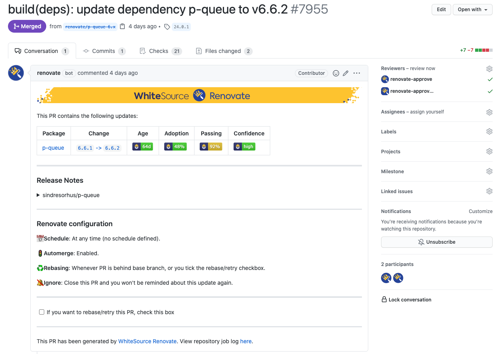

Introduction
Automerging is a Renovate feature that can enable you to fully automate upgrading of certain dependencies. When enabled, it means Renovate will attempt to merge the proposed update once it has passed tests.
As a general guide, it is recommended that you enable automerge for any types of dependency updates where you would just click Merge anyway. If there are updates for which you prefer to manually review release notes or code before merging, even when they pass tests, then do not enable automerge for those.
Automerge works particularly well for devDependencies as well as for production dependencies in projects which have great test coverage.
For example, if you have jest or mocha as a dependency, and it has an upgrade with passing tests... automerge them!
If you have a linter like eslint or tslint and its update passes... automerge them!
If you have an API with 100% test coverage and express is updated... automerge it!

Configuration examples
Automerge lock file maintenance
The lowest risk type of update to automerge is probably lockFileMaintenance.
When Renovate performs lock file maintenance, it leaves the project dependency definitions unchanged, but refreshes the lock file completely so that the latest versions according to the package file constraints are installed.
Here is an example of automerging lock file maintenance:
{
"lockFileMaintenance": {
"enabled": true,
"automerge": true
}
}
Automerge lint tool updates
Automerging lint tool updates can be a real time-saver. Sometimes an update to a lint tool or plugin definition can cause tests to fail, and that is usually deliberate/intentional because the lint authors have added a new rule that you need to adhere to. However, in many cases the new version(s) will pass tests, and if so then there's really nothing else to consider before merging, so they may as well be automerged:
{
"packageRules": [
{
"matchDepTypes": ["devDependencies"],
"matchPackagePatterns": ["lint", "prettier"],
"automerge": true
}
]
}
Automerge non-major updates
Non-major updates in SemVer ecosystems shouldn't have breaking changes (if they follow the spec), therefore many users enable automerge for these too:
{
"packageRules": [
{
"matchUpdateTypes": ["minor", "patch"],
"matchCurrentVersion": "!/^0/",
"automerge": true
}
]
}
The matchCurrentVersion setting above is a rule to exclude any dependencies which are pre-1.0.0 because those can make breaking changes at any time according to the SemVer spec.
Automerging and scheduling
Automerging is particularly beneficial if you have configured a schedule, because Renovate on its own may be able to automerge the majority of your updates.
And this is especially so if your repository needs rebasing, e.g. because you use lock files.
e.g. let's say you have dependencies abc and xyz with upgrades, and you use a yarn.lock file.
- At the start of the schedule,
Renovatewill create branches forabcandxyzupgrades, includingyarn.lockupdates - After
abcpasses tests,Renovatewill automerge it tomaster - The
xyzbranch probably now hasyarn.lockconflicts - Renovate will immediately check all other branches and rebase them
- The change to
xyzbranch will trigger another round of CI tests - After the updated
xyzbranch passes, Renovate will automerge it too
This is a lot better than you waking up to two PRs and then having to deal with conflicts yourself after you merge the first one.
Branch vs PR automerging
Even if you automerge PRs, you are likely to still get notification noise - one when the PR is created and another when it is merged.
For this reason we recommend you consider setting automergeType=branch which will mean:
- Renovate first creates a branch and no PR
- If tests pass, Renovate pushes a commit directly to the base branch without PR
- If tests fail, Renovate raises a PR for you to review
Add the renovate/** branch to your testing workflow files, or Renovate will not work properly with the automergeType=branch setting.
The result is that passing updates are essentially "silent" - the only sign of them are the commits to your master branch.
If you have enabled branch protection which prevents Renovate from automerging directly to the base branch, then this won't work and you should stick with the default PR-based automerging instead.
Assignees and Reviewers
When automerge is enabled on a PR, Renovate will not add assignees or reviewers at PR creation time, in order to decrease notifications noise a little. If tests subsequently fail, making automerge not possible, then Renovate will then add the configured assignees and/or reviewers.
Frequent problems and how to resolve them
Automerge not enabled correctly in config
Sometimes, the reason Renovate is not automerging a PR is because of a configuration mistake. You can confirm that Renovate knows you want it to automerge by checking if the PR body includes the text "Automerge: Enabled". If you see "Automerge: Disabled by config" then it means you need a config change for automerge to work.
Absence of tests
By default, Renovate will not automerge until it sees passing status checks / check runs for the branch.
If you have no tests but still want Renovate to automerge, you need to add "requiredStatusChecks": null to your configuration.
However, we strongly recommend you have tests in any project where you are regularly updating dependencies.
Committer restrictions
If you have protected your base branch with a list of allowed committers, and Renovate is not on that list, then naturally automerge can't work.
Pull Requests Required
If you have configured your project to require Pull Requests before merging, it means that branch automerging is not possible, even if Renovate has rights to commit to the base branch.
Required Pull Request reviews
If you have mandatory Pull Request reviews then it means Renovate can't automerge its own PR until such a review has happened.
If you are running the hosted WhiteSource Renovate App on github.com, you can also install the helper apps renovate-approve and renovate-approve-2 and they will mark all automerging Pull Requests by Renovate as approved.
These approval helper apps are only available for GitHub.
Codeowners
Depending on the platform, having a CODEOWNERS file could block automerging, because it means a code owner must review the PR.